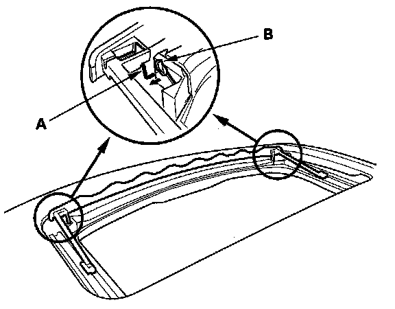
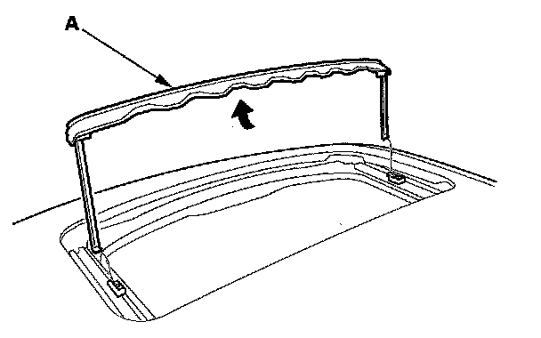

Sunroof / Moonroof Windguard: Service and Repair
Wind Deflector Replacement1. Open the glass fully.

2. Disconnect the deflector springs (A) from the bushings (B) on both sides.

3. Remove the wind deflector (A).
4. Install the deflector in the reverse order of removal.
5. Reset the moonroof control unit.